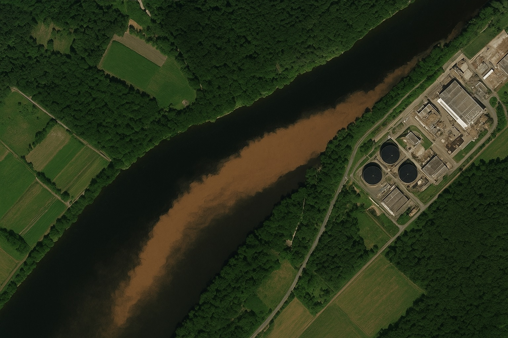
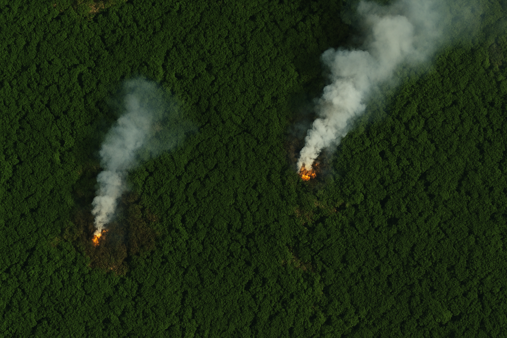

Missão Água Azul
Na Missão Água Azul nossos voluntários conseguiram identificar através da análise de imagens do satélite Landsat 2 a poluição do rio Atlantis, localizado na cidade Tábua Roxa, no interior do Estado do Paraná. A mancha identificada na imagem reflete um possível descarte ilegal de resíduos industriais no rio.
Fonte: imagem gerada por IA (ChatGPT, 2025).
Missão Extinguir Fogo
Na Extinguir Fogo, os voluntários identificaram dois pontos simultâneos de queimada na Floresta Escura, localizada na cidade de Nefroite, na região norte do Estado do Paraná. A ação rápida e precisa dos voluntários possibilitou a comunicação a tempo para as autoridades apagarem os incêncios e reduzir os danos ambientais.
Fonte: imagem gerada por IA (ChatGPT, 2025).
Missão Derrubada Zero
Nesta operação nossos voluntários localizaram uma grande área de desmatamento na Floresta das Joaninhas, localizada na cidade Artrópodes, uma extensa área sem cobertura vegetal foi visualizada e comunicada às autoridades ambientais. Infelizmente neste caso não foram localizados os responsáveis pela ação, na qual foram extraídos diversos exemplares de árvores da mata atlântica.

Fonte: imagem gerada por IA (ChatGPT, 2025).